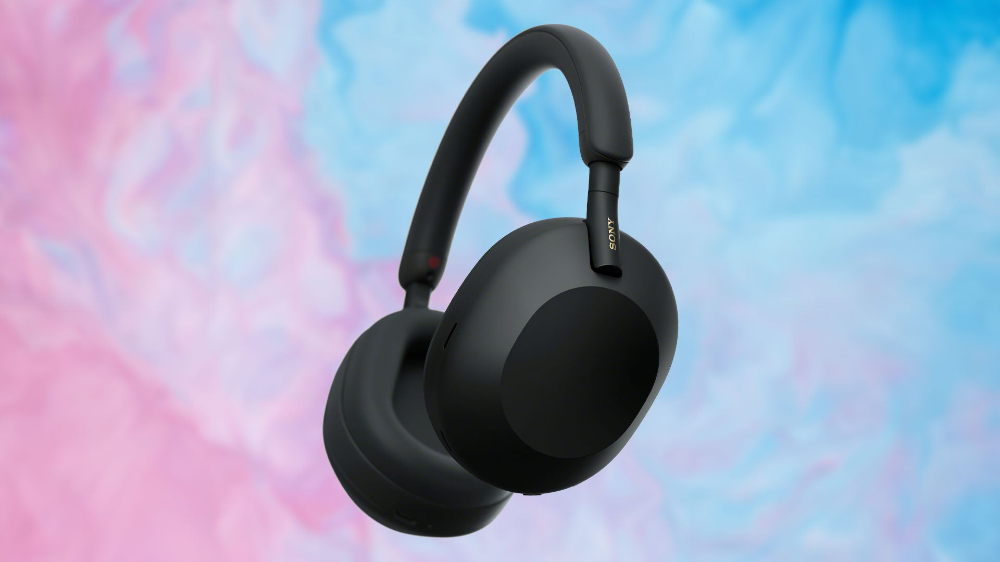
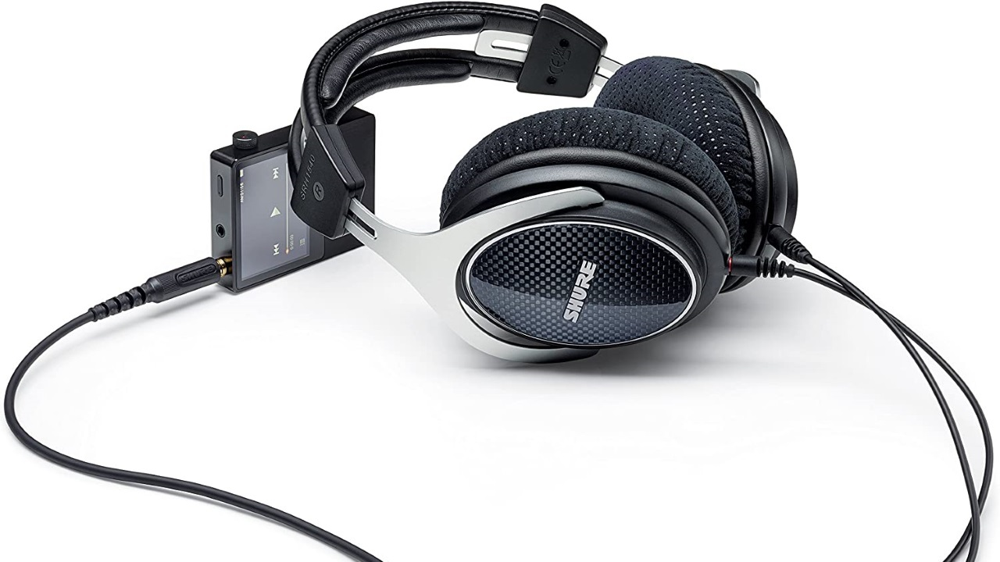

EXPERIENCE THE NEXT LEVEL OF SOUND
Welcome To The Next Dimesion
Headphones are a pair of small loudspeaker drivers worn on or around the head over a user's ears. They are electroacoustic transducers, which convert an electrical signal to a corresponding sound. Headphones let a single user listen to an audio source privately, in contrast to a loudspeaker, which emits sound into the open air for anyone nearby to hear. Headphones are also known as earspeakers, earphones or, colloquially, cans. Circumaural ('around the ear') and supra-aural ('over the ear') headphones use a band over the top of the head to hold the speakers in place. Another type, known as earbuds or earpieces consist of individual units that plug into the user's ear canal. A third type are bone conduction headphones, which typically wrap around the back of the head and rest in front of the ear canal, leaving the ear canal open. In the context of telecommunication, a headset is a combination of headphone and microphone.
Choose The Best
Headphones can prevent other people from hearing the sound, either for privacy or to prevent disturbing others, as in listening in a public library. They can also provide a level of sound fidelity greater than loudspeakers of similar cost. Part of their ability to do so comes from the lack of any need to perform room correction treatments with headphones. High-quality headphones can have an extremely flat low-frequency response down to 20 Hz within 3 dB. While a loudspeaker must use a relatively large (often 15" or 18") speaker driver to reproduce low frequencies, headphones can accurately reproduce bass and sub-bass frequencies with speaker drivers only 40-50 millimeters wide (or much smaller, as is the case with in-ear monitor headphones). Headphones' impressive low-frequency performance is possible because they are so much closer to the ear that they only need to move relatively small volumes of air.
 wireless headphones
Wireless headphones are headphones that connect to a device, such as a smartphone, stereo speaker, television, gaming console, computer, or other electronic devices without using a wire or cable. Wireless headphones work by transmitting audio signals through either radio or IR (infrared) signals, depending on the device. From call centers to fitness centers, wireless headphones are used by millions of people every day for work and play. For example, wireless headphones are popular with gamers, since it frees you to move around without having to worry about a cord. People doing a workout at the gym or in front of their TV in the living room love the freedom of wireless headphones. They are also perfect for people who want to watch late-night television without disturbing others.
visit our collection of premium wireless headphones
Wired Headphones
A wired headset is a set of headphones attached to a microphone and connected to either a telephone or a computer using a wire connection. The connection is usually made via a headphone jack or a USB plug. A wired headset allows the user to both listen and speak using only one piece of equipment. In some instances, the headphones and microphone attach to the electronic device using a single connection, while some wired headsets must use separate wires for the two components